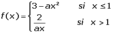

Ejercicios y problemas de derivadas
1Calcular las derivadas en los puntos que se indica:
1 en x = -5.
en x = -5.
2 en x = 1.
3 en x = 2.
en x = 2.
4 en x = 3.
en x = 3.
2Dada la curva de ecuación f(x) = 2x2 − 3x − 1, halla las coordenadas de los puntos de dicha curva en los que la tangente forma con el eje OX un ángulo de 45°.
3¿Cuál es la velocidad que lleva un vehículo se mueve según la ecuación e(t) = 2 − 3t2 en el quinto segundo de su recorrido? El espacio se mide en metros y el tiempo en segundos.
4Debido a unas pésimas condiciones ambientales, una colonia de un millón de bacterias no comienza su reproducción hasta pasados dos meses. La función que representa la población de la colonia al variar el tiempo (expresado en meses) viene dada por:

Se pide:
1. Verificar que la población es función continua del tiempo.
2. Calcular la tasa de variación media de la población en los intervalos [0, 2] y [0, 4].
3. Calcular la tasa de variación instantánea en t = 4.
5Hallar el punto en que y = |x + 2| no tiene derivada. Justificar el resultado representando su gráfica.
6Hallar los puntos en que y = |x 2 − 5x + 6| no tiene derivada. Justificar el resultado representando su gráfica.
7Estudiar la continuidad y derivabilidad de la función definida por:
8Dada la función:

¿Para qué valores de a es derivable?
9Estudiar para qué valores de a y b la función es continua y derivable:
10Determinar los valores de a y b para que la siguiente función sea derivable en todos sus puntos:
Ejercicios resueltos de cálculo de derivadas
- 1
- 2
- 3
- 4
- 5
- 6
- 7
- 8
- 9
- 10
Ejercicio 1 resuelto
1.  en x = −5.
en x = −5.


2. en x = 1.


3.  en x = 2.
en x = 2.


4.  en x = 3.
en x = 3.

Ejercicio 2 resuelto
Dada la curva de ecuación f(x) = 2x2 − 3x − 1, halla las coordenadas de los puntos de dicha curva en los que la tangente forma con el eje OX un ángulo de 45°.


Ejercicio 3 resuelto
¿Cuál es la velocidad que lleva un vehículo se mueve según la ecuación e(t) = 2 − 3t2 en el quinto segundo de su recorrido? El espacio se mide en metros y el tiempo en segundos.

Ejercicio 4 resuelto
Debido a unas pésimas condiciones ambientales, una colonia de un millón de bacterias no comienza su reproducción hasta pasados dos meses. La función que representa la población de la colonia al variar el tiempo (expresado en meses) viene dada por:
Se pide:
1. Verificar que la población es función continua del tiempo.


2. Calcular la tasa de variación media de la población en los intervalos [0, 2] y [0, 4].
3. Calcular la tasa de variación instantánea en t = 4.

Se ha hallado la derivada de la función exponencial mediante la fórmula inmediata.
Ejercicio 5 resuelto
Hallar el punto en que y = |x + 2| no tiene derivada. Justificar el resultado representando su gráfica.
La función es continua en toda  .
.
f'(−2)− = −1f'(−2)+ = 1
No será derivable en: x= −2.
En x = −2 hay un pico, por lo que no es derivable en x= −2.
Ejercicio 6 resuelto
Hallar los puntos en que y = |x 2 − 5x + 6| no tiene derivada. Justificar el resultado representando su gráfica.

La función es continua en toda  .
.
f'(2)- = −1f'(2)+ = 1
f'(3)- = −1f'(3)+ = 1
Como no coinciden las derivadas laterales la función no será derivable en: x = 2 y x = 3.

Podemos observar que en x = 2 y en x = 3 tenemos dos puntos angulosos, por lo que la función no será derivable en ellos.
Ejercicio 7 resuelto
Estudiar la continuidad y derivabilidad de la función definida por:
La función no es continua en x = 0 porque no tiene imagen. Por tanto tampoco es derivable.

Por lo que es continua, veamos si es derivable mediante las fórmulas de derivadas trigonómetricas inmediatas.

Como las derivadas laterales no coinciden no es derivable en el punto.
Ejercicio 8 resuelto
Dada la función:
¿Para qué valores de a es derivable?


Ejercicio 9 resuelto
Estudiar para qué valores de a y b la función es continua y derivable:


Ejercicio 10 resuelto
Determinar los valores de a y b para que la siguiente función sea derivable en todos sus puntos:
Para qué una función sea derivable tiene que ser continua. En este caso la función no es continua para x = 0 cualesquiera que sean a y b, es decir, no existen valores de a y b que hagan continua la función.
Por tanto, no existen valores de a y b para los cuales la función sea derivable.
 Ejercicios
Ejercicios